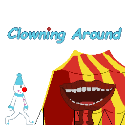

For Global Game Jam 2024, the theme was: "Make Me Laugh". I came forward with an idea for a puzzle platformer, where you play as a clown in a circus world. You can make a clown joke (honk your nose) near the resident walking mouths to make them laugh, which creates a physical HaHa, which can interact with the environment - pop balloons, break platform, etc.
My role on the team was being the Artist and Creative Lead.
Our team ended up winning a "Best use of theme" award at the end of the weekend.
You can check the project out here!